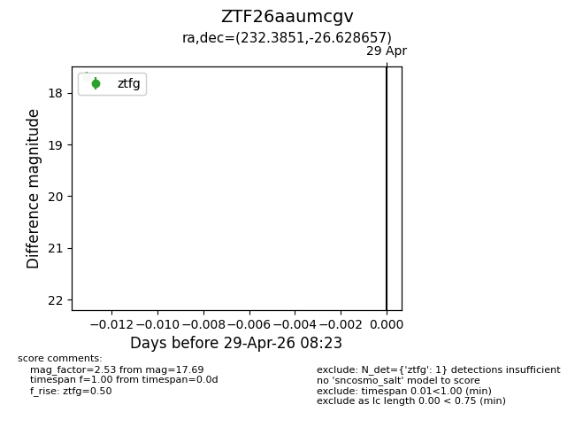
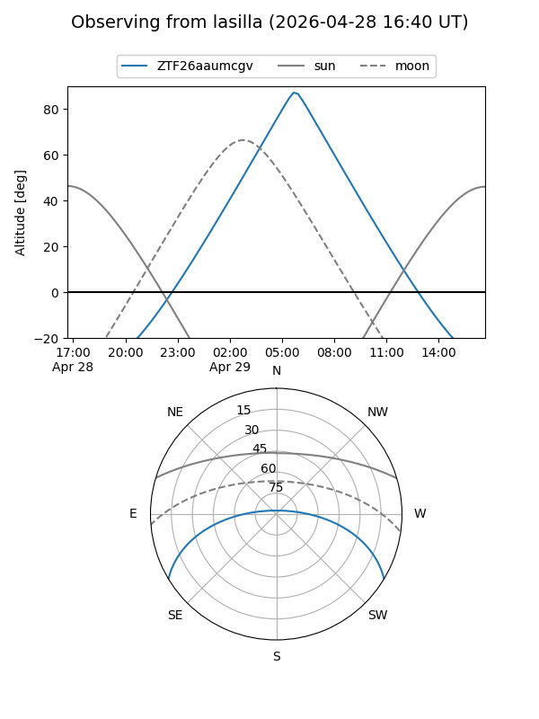
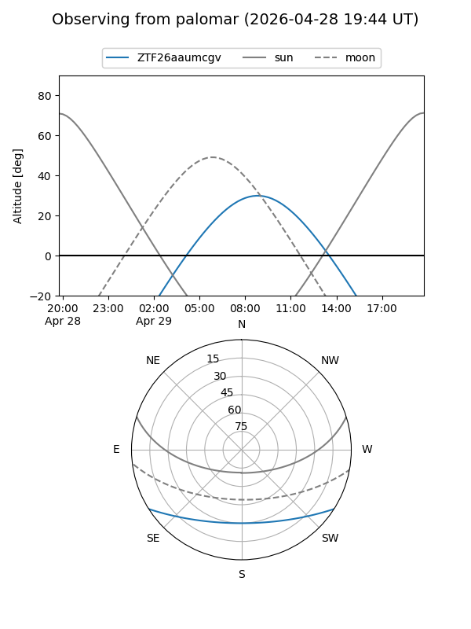

ZTF26aaumcgv
Target ZTF26aaumcgv at 2026-04-29 08:26
Aliases and brokers:
FINK: link
Lasair: link
ALeRCE: link
alt names
ZTF26aaumcgv (ztf,fink_ztf)
Coordinates:
equatorial (ra, dec) = 232.3851,-26.62866
equatorial (HMS+DMS) = 15:29:32.43,-26:37:43.16
galactic (l, b) = (341.5069,+24.16046)
Flags:
Photometry:
last ztfg=17.69
1 ztfg detections
Lightcurve

Visibility


Additional plots